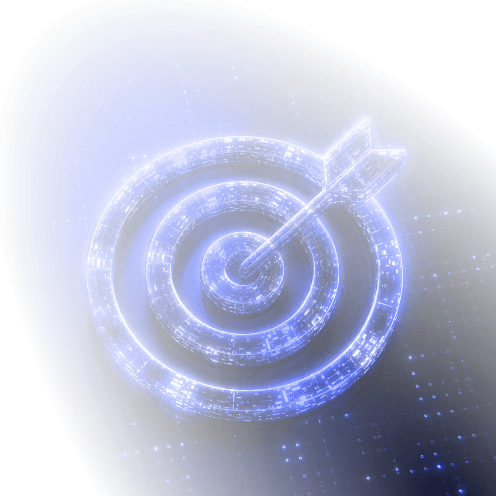

CTO, CIO, директор по цифровизации, руководитель IT‑отдела — реальные сотрудники компаний, которым вы можете сделать оффер. С именами, контактами и пониманием запроса. Всё через OSINT.
Продаёте в B2B? Значит вы сталкивались с этим:
Продукт хороший, но сложный. Непонятно, к кому идти в компании‑клиенте: к CTO, к IT‑директору или сразу к CEO. А может, вообще не к ним?
Холодные звонки IT‑компаниям бесполезны — их попросту не берут.
Лиды из рекламы приходят, но не те: стажёры, студенты, случайные люди. Поиск клиентов превращается в разбор ненужной информации вместо продаж.
Встреча с нужным ЛПР — редкое мероприятие. Ещё и окажется, что решение принимает другой отдел.
BizDev становится слишком дорогим ресурсом: специалист тратит 80% времени на поиск ЛПР, а не на переговоры.
LinkedIn, сайты компаний, публичные реестры, профессиональные форумы — всё, что находится в общем доступе. Полностью легально, никаких серых схем.
Покупатели ваших решений — банки, ритейл, промышленность — оставляют в сети достаточно следов: какой стек внедряют, кто отвечает за направление, какие задачи решают прямо сейчас.
Стандартная лидогенерация — купить базу, загрузить в рассылку и надеяться. OSINT работает иначе: находим человека, который реально принимает решения, проверяем контакт вручную и только потом передаём вам.

Например, вы продаёте SaaS‑платформу для автоматизации HR. Вам нужны HR‑директора в компаниях 200+ человек. Вот что происходит:
Описываете продукт, целевые должности и профиль компаний — нам достаточно понять, кто ваш ICP.
Находим компании, которые подходят по профилю, и вычисляем, кто там реально принимает решение о закупке IT‑продуктов.
Email, телефон, LinkedIn, иногда Telegram. Берём только тех, кто ещё не заспамлен конкурентами. Каждый контакт проверяем вручную.
Контакты ЛПР, готовых к диалогу — с именами, должностями и проверенными данными для связи.
Выйдем на контакт с лидами сами, напишем персонализированную рассылку и запустим email‑аутрич‑кампанию. Вы подключаетесь только тогда, когда человек готов к диалогу.
Обсудить форматНаходим технических директоров, директоров по цифровизации, руководителей IT‑отделов через OSINT. Только те, кто может повлиять на внедрение вашего решения.
Контакты, проверенные вручную, без купленных баз. Если контакт вызывает сомнения — не включаем в список.
Работаем только с теми компаниями, которые подходят под ваш идеальный профиль клиента: размер, индустрия, стек и другие параметры.
Напишем персонализированные письма под каждого получателя и настроим последовательности. Лидогенерация точечно, а не массово.
Привлечение корпоративных клиентов без потерь вашего времени — сами договоримся о звонке или назначим встречу. Вы получаете готовый слот в календаре.
Проверяем все контакты перед передачей: email, должность, компания — всё актуально. Не пишем на мёртвые адреса и не приносим устаревшие данные.
Привлечение корпоративных клиентов в сегментах, где мало компаний или сложно достучаться. ПО для нефтехима, enterprise‑интеграции, узкоспециализированный SaaS.
Индивидуальный подход под каждый запрос. Не льём одинаковые письма на тысячи адресов — работаем точечно.
Для узких ниш объём меньше, но качество выше. Называем реалистичные цифры на старте — не обещаем того, чего нет на рынке.
Если конфиденциальность — ваш приоритет, подписываем NDA до начала работы. Ни ваше название, ни детали проекта не используем без вашего согласия.
Расскажите, кого ищете. Мы посмотрим, сколько контактов сможем найти и за какое время.
Нажимая кнопку, вы соглашаетесь с политикой конфиденциальности
Мы свяжемся с вами в ближайшее время